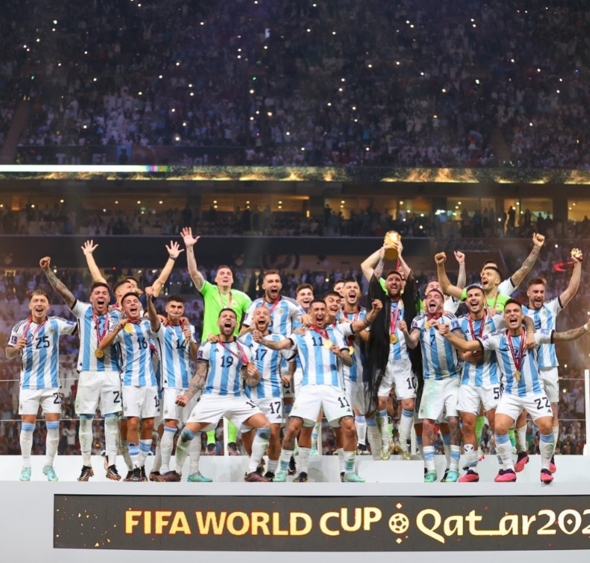

/i.s3.glbimg.com/v1/AUTH_bc8228b6673f488aa253bbcb03c80ec5/internal_photos/bs/2022/w/t/yHJBeMQ7SNZ30dquWMRA/2022-12-18t182331z-312590262-up1eici1f002f-rtrmadp-3-soccer-worldcup-arg-fra-report.jpg)
Messi marcando na disputa de pênaltis.

Capitão levantando a taça.

Melhor jogador da Copa do Catar.

Enzo Fernandez foi eleito a revelação do campeonato
Emiliano Martínez, foi eleito o melhor goleiro da competição, ficando com o prêmio luva de ouro.
Messi ficou com o prêmio bola de ouro, dado ao melhor jogador do campeonato.
Mbappé foi o artilheiro da Copa e recebeu a chuteira de ouro. Com os gols marcados, o atacante francês igualou o número de gols de Pelé em Copas, com 12 gols no total.